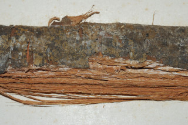
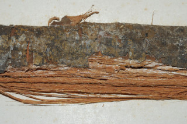

Images :

 

| Habit : | Trees , up to 10 m tall. |
| Leaves : | Leaves simple , alternate , distichous ; petiole 0.6-1.3 cm long, stout, canaliculate ; lamina 8-16.5 x 3.8-6 cm, elliptic to oblong sometimes nearly narrow oblong , apex acuminate with blunt tip ( acumen 0.5-0.8 cm long), base acute , margin entire , glabrous ; secondary_nerves 8-12 pairs, very slender, sometimes invisible towards margin; tertiary_nerves obscure . |
| Inflorescence / Flower : | Flowers solitary on long peduncle , axillary , greenish white, slightly pubescent . |
| Fruit and Seed : | Cluster of 1-seeded berry , oblong to obovate , stalked , glabrous . |